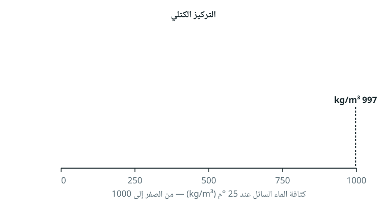

التركيز الكتلي
Mass concentration
التركيز الكتلي هو كتلة المكوّن في وحدة حجم المحلول، ورمزه ρ أو γ ووحدته kg/m³ أو g/L. يُستعمل حين تُوزن الكتلة ويُقاس الحجم، ولا يحتاج معرفة الكتلة المولية.
التركيز الكتلي لمكوّن في محلول هو كتلته مقسومة على حجم المحلول، ورمزه ρ_i أو γ_i، ووحدته في النظام الدولي كيلوغرام لكل متر مكعب، ويُستعمل عملياً الغرام لكل لتر. وهو التركيز الأكثر مباشرة في العمل المخبري: تُوزن المادة الصلبة على ميزان وتُذاب في حجم معلوم، فتحصل على التركيز الكتلي بلا حاجة إلى الكتلة المولية. ومنه تُشتق المولارية بقسمة التركيز الكتلي على الكتلة المولية. وهو أيضاً المقياس المستعمل في تحليل المياه وفي الطب، حيث تُقرأ تراكيز المواد بالملّيغرام لكل لتر. مثال: إذابة 5.844 غ من كلوريد الصوديوم في ماء حتى 1.000 L يعطي تركيزاً كتلياً 5.844 g/L، ومولارية 5.844/58.44 = 0.100 mol/L.
كيف تعمل الظاهرة؟
التركيز الكتلي يُقاس بخطوتين مستقلتين: وزن المادة الصلبة على ميزان تحليلي، وقياس الحجم النهائي للمحلول في دورق معياري. ولأن الوزن والحجم مستقلان عن الكتلة المولية، فهو التركيز الوحيد الذي يُقاس بلا معرفة تركيب المادة. حين يُعرف التركيب، تُقسم الكتلة على الكتلة المولية فتُنتج المولارية، فتصبح المادة قابلة للمعادلة مع مواد أخرى. هذا التسلسل — وزن ثم حجم ثم قسمة على الكتلة المولية — هو المسار العملي المعتاد لتحضير المحاليل، وهو أيضاً مصدر خطأ شائع: إذابة مادة في حجم من المذيب لا «حتى» حجم من المحلول تُنتج تركيزاً أقل من المطلوب، لأن حجم المحلول النهائي أكبر من حجم المذيب.
العلاقة بالأرقام
ρ_i = m_i/V بوحدة kg/m³، و1 g/L = 1 kg/m³ = 1 mg/mL. والتحويل إلى المولارية: c = ρ_i/M_i حيث M_i الكتلة المولية بالكيلوغرام لكل مول. والتحويل إلى الكسر الكتلي: w_i = ρ_i/ρ حيث ρ كثافة المحلول. مثال عددي: 5.844 غ NaCl في 1.000 L محلول = 5.844 g/L؛ وبكتلة مولية 58.44 غ/مول تكون المولارية 5.844/58.44 = 0.100 mol/L. ولو كانت كثافة المحلول 1.002 kg/L لكان الكسر الكتلي 5.844/(1.002×1000) = 0.005 83.
مفاهيم متقاربة
التركيز الكتلي ليس كثافة المحلول: الكثافة كتلة الكل على حجم الكل، والتركيز الكتلي كتلة الجزء على حجم الكل. في محلول مائي مخفّف يتقارب الرقمان فيظهر الخطأ بلا أثر، لكنهما يفترقان كلما زادت كتلة المذاب. وليس الكسر الكتلي: الكسر الكتلي بلا وحدة، والتركيز الكتلي بوحدة كتلة لكل حجم. وليس المولارية: المولارية تعدّ جزيئات، والتركيز الكتلي يزن كتلاً، ولا تحويل بينهما بلا الكتلة المولية. والرمز ρ يُستعمل للكثافة والتركيز الكتلي معاً في بعض النصوص، فيلزم التسمية الصريحة.
حدود التطبيق
التركيز الكتلي يعتمد على الحجم، فيتغير بالحرارة بتمدد المحلول، بخلاف المولالية. وهو لا يخبر عن عدد الجزيئات، فمادتان بالتركيز الكتلي نفسه قد تختلف مولاريتهما بعشرة أضعاف إذا اختلفت كتلتهما المولية. ولا يُستعمل لوصف الخلائط الغازية عادةً، فمقياسها المألوف الكسر المولي أو الضغط الجزئي. وفي المحاليل الغروية قد لا يكون للمكوّن كتلة ذائبة محددة، فيُستعمل التركيز الكتلي للجسيمات لا للجزيئات.

| الكمية | القيمة | المصدر |
|---|---|---|
| كثافة الماء السائل عند 25 °م | 997.00 kg/m³ | [2] |
| الكتلة المولية لكلوريد الصوديوم | 58.44 g/mol | [1] |
المصادر
- 1 The International System of Units (SI), 9th edition (2019) — BIPM — Bureau International des Poids et Mesures (2019). www.bipm.org/en/publications/si-brochure · اطُّلع عليه 2026-11-21
- 2 NISTIR 5078 — Thermodynamic Properties of Water, 0 to 374 C and Pressures to 100 MPa (IAPWS-95 tabulation) — NIST — National Institute of Standards and Technology (1998). www.nist.gov/publications/thermodynamic-properties-water-temperatures-0-374-c-and-pressures-100-mpa · اطُّلع عليه 2026-11-21
- 3 CODATA Value: Avogadro constant — NIST — CODATA 2022 recommended values (2024). physics.nist.gov/cgi-bin/cuu/Value?na · اطُّلع عليه 2026-11-21
استشهد بهذا المصطلح
الصيغتان مبنيتان من بيانات الصفحة نفسها: العنوان والتاريخ ورابط النسخة المنشورة.
التركيز الكتلي — Mass concentration. (2026). ديوان المعرفة — انفراد. https://infiradev.com/diwan/terms/term-mass-concentration.html
@misc{term-mass-concentration2026,
title = {التركيز الكتلي},
titleaddon = {Mass concentration},
howpublished = {{ديوان المعرفة — انفراد} — مرجع علمي عربي},
year = {2026},
url = {https://infiradev.com/diwan/terms/term-mass-concentration.html},
urldate = {2026-11-26},
note = {مراجعة علمية: hermes (مراجعة معتمدة 2026-11-26)}
}
راجعه: hermes (مراجعة معتمدة 2026-11-26) · 2026-11-26 · آخر تحديث 2026-11-21